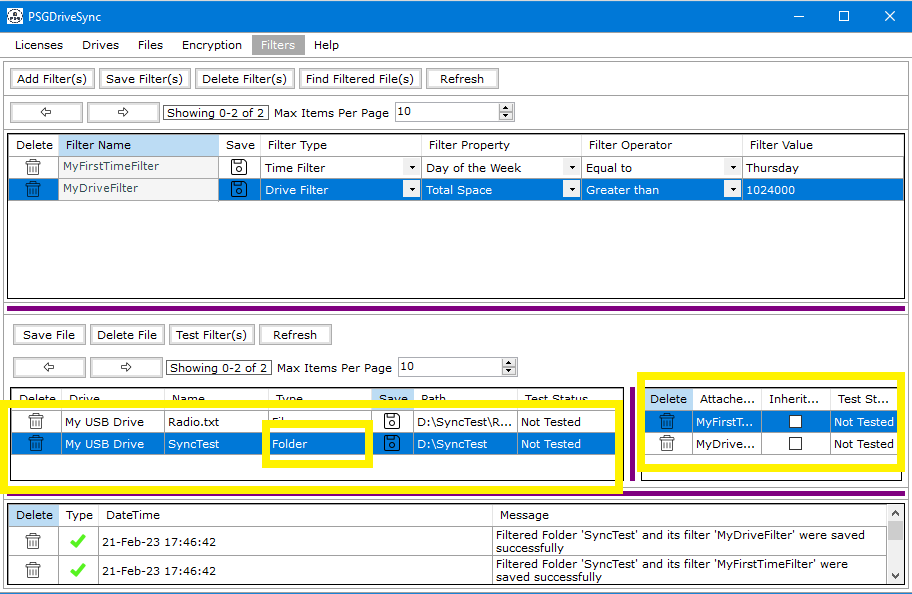
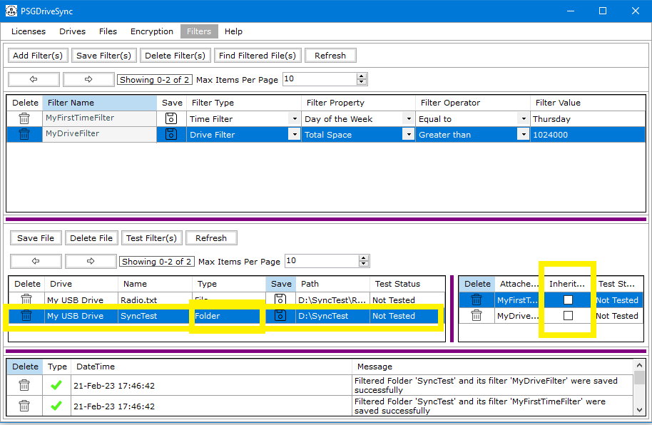
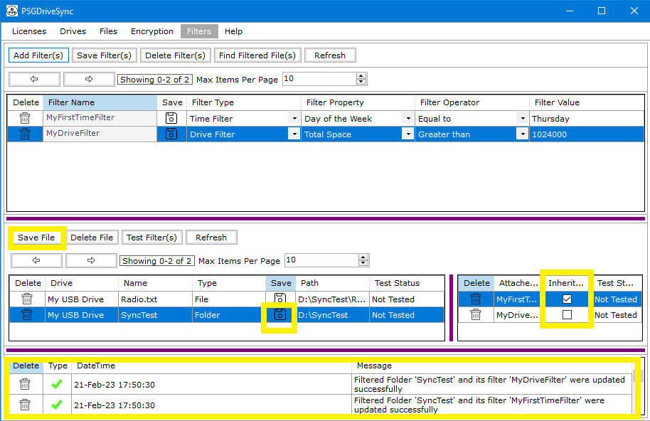

Filters which are linked to filtered files can be set as "Inheritable" as long as the filtered file is a Folder. If needed those same filters can be set to not be "Inheritable" as well.
Filter(s) marked as "Inheritable" do not apply to the folder which is its linked filtered file instead those kind of filters apply to all the child files and folders contained in the
folder itself.
Following are the steps needed to be performed in order to mark a filter as "Inheritable"
|
1 |
Select a filtered file in the list of filtered files in the "Filters" window. Doing so will make all its linked filters show up in the panel right next to it. |
 |
|
1 |
In order to make a linked filter "Inheritable", put a check in the box labelled as "Inheritable" next to the linked filter name. To make a filter not be "Inheritable" anymore, simply uncheck the box next to the linked filter's name. |
 |
|
1 |
Click on "Save" on the filtered file. The result of the Save operation should show up in system messages. |
 |